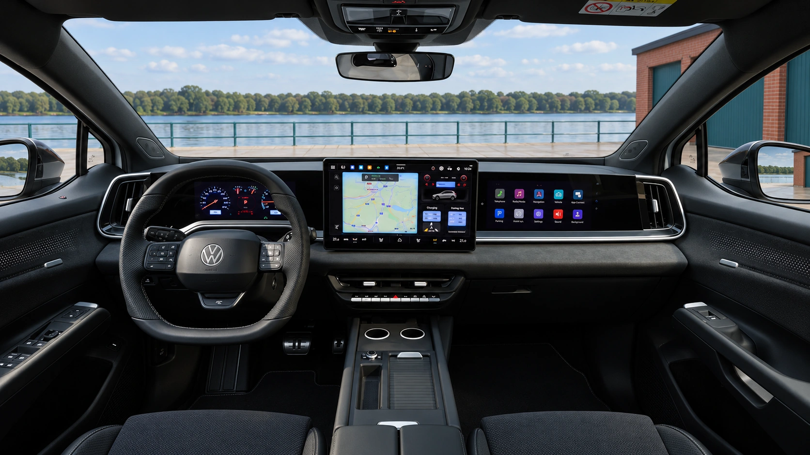
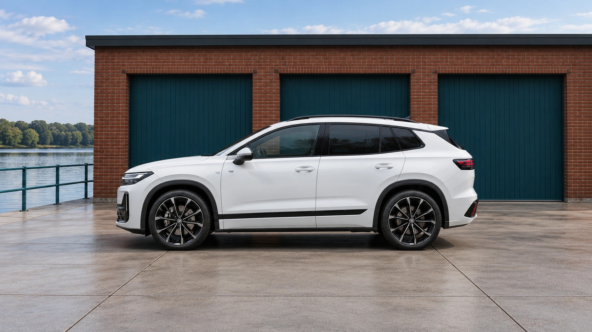
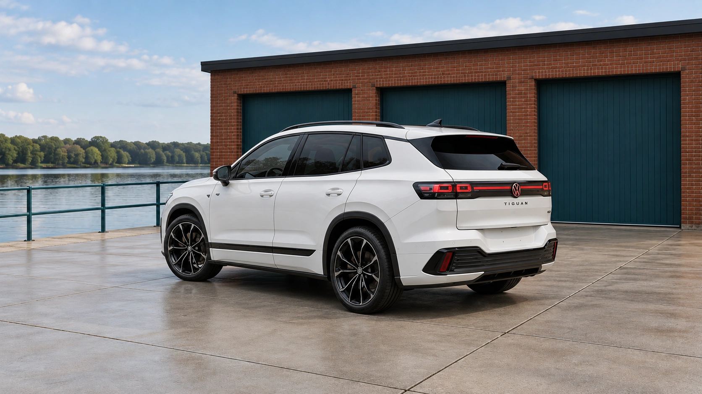

The Volkswagen ID. Tiguan is expected to reach the U.S. as a 2028 model, replacing the ID.4 with a name familiar to American SUV buyers. The vehicle has already made its global debut; the European rollout starts in early 2027. Those are different milestones, and the European specifications do not yet define the American version.
Volkswagen’s replacement for the ID.4 has a new name, but some of its most welcome changes are reassuringly old-fashioned. The ID. Tiguan brings back physical steering-wheel buttons, a row of climate controls and a console-mounted audio controller. Even the exterior door handles return to a conventional pull design.
Unveiled on October 9, the electric SUV will succeed the ID.4 and ID.5 while sitting alongside the existing combustion-engine and hybrid Tiguan. The name therefore needs a little care: this is the electric branch of the family, not an announcement that every Tiguan is going battery-only.
A dashboard that leaves room for buttons
The cabin still embraces screens. A 10-inch instrument display and 15-inch central touchscreen can be joined by an optional 12-inch passenger display. What changes is the division of labor. Basic climate functions have dedicated buttons, and the driver gets a redesigned control panel for all four windows.
There is a playful detail, too: a retro instrument view modeled on the Golf Mk4’s blue-and-red gauges. Its apparent tachometer displays power flow rather than engine speed. It gives the electric car a familiar visual reference without pretending there is an engine under the hood.

Three powertrains, with European figures attached
Volkswagen’s European launch specifications cover two rear-drive versions and a 4MOTION all-wheel-drive model. The battery capacities below are usable capacities; horsepower is rounded from the published kilowatt figures.
| Drive | Battery | Power |
|---|---|---|
| Rear-wheel drive | 58 kWh | 140 kW / 188 hp |
| Rear-wheel drive | 77 kWh | 210 kW / 282 hp |
| 4MOTION AWD | 77 kWh | 220 kW / 295 hp |
The headline range is up to 600 kilometers, or approximately 373 miles, on the WLTP cycle. That is a European certification figure, not an EPA rating or a promise of highway range. It should not be compared directly with the EPA numbers on a U.S. window sticker.

The useful additions go beyond the dashboard
A 32-liter front storage compartment gives charging cables a separate home. One-pedal driving is standard in the European launch specification, while an available vehicle-to-load adapter lets the car supply external electrical equipment.
Those are practical additions for an electric family vehicle. Their value is easier to judge against a routine—where cables are stored, how often equipment needs power—than against a long options list. Buyers considering an EV can also use our home charging calculator to estimate electricity costs from their own tariff.

What American buyers still need to know
European market introduction is scheduled for early 2027. German pre-sales began October 13, with a starting price of €42,695. That is a German price, not a basis for assigning the SUV a U.S. MSRP through currency conversion.
The launch documents used here do not establish U.S. pricing, an EPA range or the final American trim lineup. Until those details arrive, the clearest story is the change in approach: Volkswagen is giving its electric SUV a familiar name and restoring direct access to everyday functions. For a car intended to serve a household, those decisions deserve as much attention as peak power.
Sources & specifications
Official Volkswagen launch materials checked October 15, 2026. Specifications refer to the European launch; range uses WLTP.
Keep exploring